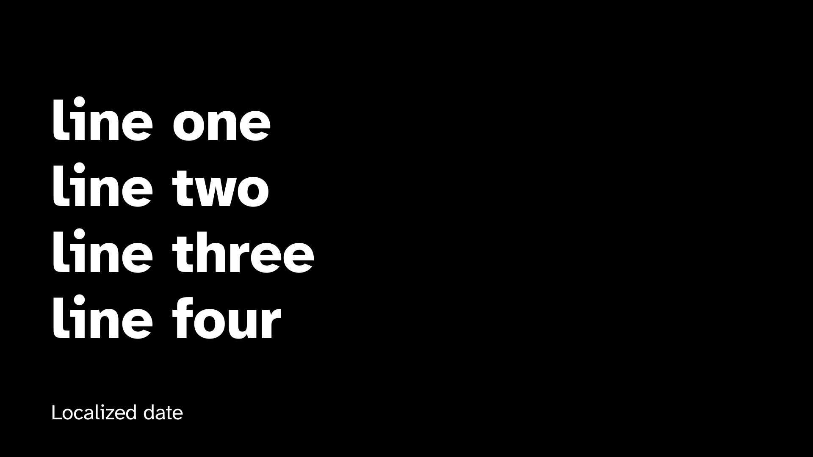
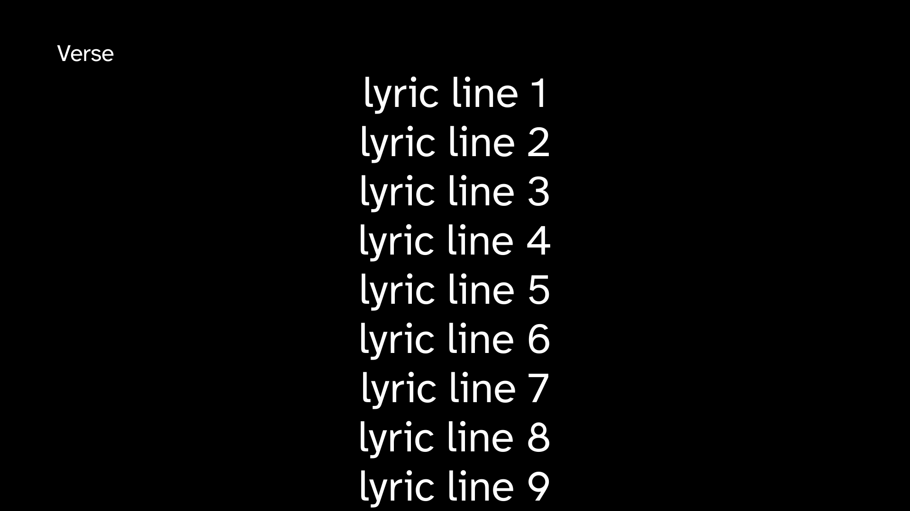

Renderer output, not HTML: each frame is a 1920x1080 capture from the canonical-slide-lab capture test, and a recapture that changes the bytes needs a fresh approval. Provenance and the full row table are in capture-rows.md; review it live with cargo run -p ordo --example canonical-slide-lab.
black · Black · header absent

celebration-title-overflow · CelebrationTitle · header absent celebration title has 4 rendered lines against a three-line ceiling; split before shrinkingcelebration-title · CelebrationTitle · header National Catechetical Day
lyrics-mixed-four-line · Lyrics · header Mixed lyric body carries 4 phrases against a two-phrase target; split before shrinking

lyrics-overflow-warning · Lyrics · header Verse body content needs 2080px but the body zone offers 862px at the approved minimum; split before shrinking · lyric body carries 20 phrases against a two-phrase target; split before shrinking · lyric body has 20 rendered lines against a four-line ceiling; split before shrinkinglyrics-punctuation · Lyrics · header Verselyrics-tagalog-three-line · Lyrics · header Taludtod lyric body carries 3 phrases against a two-phrase target; split before shrinkingpsalm-cebuano · Psalm · header SALMO RESPONSORYO:psalm-header-empty · Psalm · header emptyreading-identification-mateo · ReadingIdentification · header absent